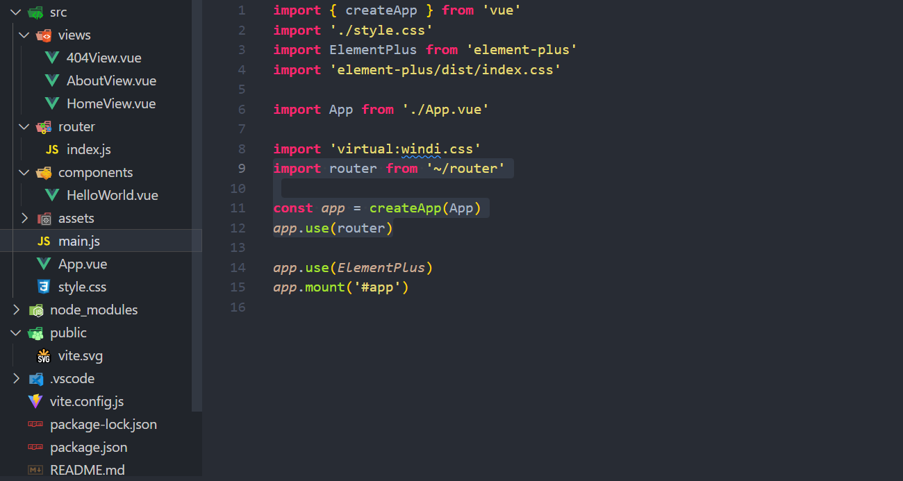

Vue 环境搭建¶
文档用于记录 Vue 环境快速初始化 
安装Node¶
官网：
https://nodejs.org/en/download/package-manager
- 安装 nvm 包管理器
curl -o- https://raw.githubusercontent.com/nvm-sh/nvm/v0.40.1/install.sh | bash
source ~/.bashrc
- 安装 node
nvm install 18.20.4
- 切换 node版本
nvm use 18.20.4
node -v
v18.20.4
- 设置国内镜像源码
npm config set registry http://registry.npmmirror.com
npm config get registry
http://registry.npmmirror.com
Vite 项目搭建¶
官网：
https://cn.vitejs.dev/guide/
npm create vite@latest my-vue-app -- --template vue
Need to install the following packages:
create-vite@6.0.1
Ok to proceed? (y) y
> npx
> create-vite my-vue-app --template vue
Scaffolding project in C:\Users\dengyouf\vscodeProjects\my-vue-app...
Done. Now run:
cd my-vue-app
npm install
npm run dev
引入ElementPlus¶
官网：
https://element-plus.org/zh-CN/guide/installation.html
- 安装
npm install element-plus --save
- 在main.js引入
// main.js
import { createApp } from 'vue'
import './style.css'
import ElementPlus from 'element-plus'
import 'element-plus/dist/index.css'
import App from './App.vue'
const app = createApp(App)
app.use(ElementPlus)
app.mount('#app')
引入WindiCSS¶
官网：
https://cn.windicss.org/integrations/vite.html
- 安装
npm i -D vite-plugin-windicss windicss
- 在Vite 配置中添加插件
// vite.config.js
import { defineConfig } from 'vite'
import vue from '@vitejs/plugin-vue'
import WindiCSS from 'vite-plugin-windicss'
// https://vite.dev/config/
export default defineConfig({
plugins: [vue(), WindiCSS()],
})
- 在入口文件导入
// main.js
import 'virtual:windi.css'
- 验证
// App.vue
<template>
<div>
<!-- https://cn.windicss.org/utilities/general/colors.html -->
<button class=" bg-blue-300 text-indigo-50 px-4 py-2 rounded-xl transition-all druation-500 hover:(bg-blue-900) focus:(ring-2 bg-red-900)">windicss</button>
</div>
</template>
- 优化代码
<template>
<div>
<!-- https://cn.windicss.org/utilities/general/colors.html -->
<button class="btn">windicss</button>
</div>
</template>
<style scoped>
.btn {
@apply bg-blue-300 // 控制背景色
text-indigo-50 // 控制文本大小
px-4 // 控制水平间距
py-2 // 控制垂直间距
rounded-xl // 控制边角弧度
transition-all // 控制 CSS 过渡延迟
druation-500 // 控制CSS 过渡 500ms 延迟
hover:(bg-blue-900)
focus:(ring-8 bg-blue-900);
}
</style>
引入Vue Router¶
官网：
https://router.vuejs.org/zh/installation.html
- 安装
npm install vue-router@4
- 添加路由文件
mkdir router && touch router/index.js
// router.index.js
import {
createRouter,
createMemoryHistory
} from 'vue-router'
const routes = []
const router = createRouter({
history: createMemoryHistory(),
routes:routes
})
export default router
- 引入路由
// main.js
import router from './router'
const app = createApp(App)
app.use(router)
- 配置文件系统路径别名
// vite.config.js
import path from 'path'
// https://vite.dev/config/
export default defineConfig({
resolve: {
alias: {
"~": path.resolve(__dirname, "src")
}
},
...
})
- 验证路由
# 准备两个页面
mkdir views && touch views/{HomeView.vue,AboutView.vue}
cat views/HomeView.vue
<template>
<div>
<h2>首页</h2>
</div>
</template>
cat views/AboutView.vue
<template>
<div>
<h2>关于我</h2>
</div>
</template>
# 添加路由
// router/index.js
import {
createWebHashHistory,
createRouter } from 'vue-router'
import HomeView from '~/views/HomeView.vue'
import AboutView from '~/views/AboutView.vue'
const routes = [
{ path: '/', component: HomeView },
{ path: '/about', component: AboutView },
]
const router = createRouter({
history: createWebHashHistory(),
routes,
})
export default router
# 在入口文件main.js引入组件
// main.js
import router from '~/router'
const app = createApp(App)
app.use(router)
# 在App.vue中
404页面设置¶
- 添加 404 页面
// views/404View.vue
<template>
<div>
<h3>Oops!!!!</h3>
</div>
</template>
- 添加路由
// router/index.js
import NotFound from '~/views/404View.vue'
const routes = [
{ path: '/:pathMatch(.*)*', name: 'NotFound', component: NotFound }
]